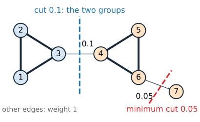
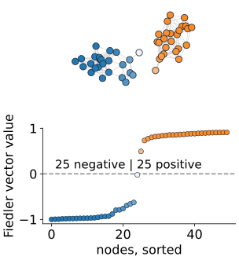
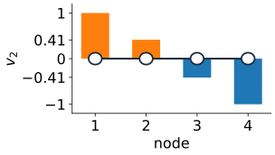
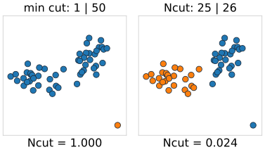
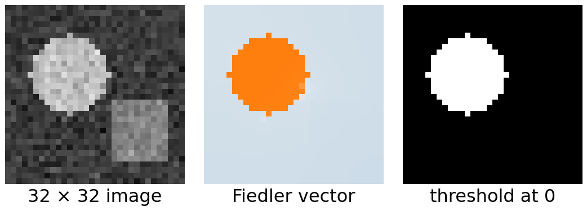

A weighted undirected graph: nodes = pixels (or points), w_{pq} \ge 0 = affinity, large when p and q look alike and are close. Split the nodes into A and B:
\text{cut}(A, B) = \sum_{p \in A,\; q \in B} w_{pq}.
The smallest cut over all splits is almost always one node against the rest: a node has few edges, a real boundary many.
Example: two triangles joined by an edge of weight 0.1, plus a pendant node hanging on by 0.05. The minimum cut (0.05) cuts off the pendant node, not the two triangles.
We want a cut that is small relative to the size of the parts.

The example graph. The minimum cut (red) cuts off node 7; the split we want (blue) costs twice as much. Node colours: the sign of the normalized Fiedler vector (later).
The idea: a smooth vector on the graph
Give every node a number x_p, and ask for numbers that change as little as possible along strong edges, without all being equal.
Inside a tightly connected group, the numbers must stay nearly the same.
Between two groups joined only by weak edges, they are free to jump.
So the smoothest non-constant assignment is roughly “+ on one group, − on the other”: its sign splits the graph where the edges are weak.
This assignment is an eigenvector of a matrix built from the graph, the Fiedler vector. Computing it is linear algebra, not a search over 2^n splits.
Normalized cuts add one twist: balance, so that cutting off a single weakly attached node does not count as a good split.

The demo’s “two blobs” (\sigma = 0.08): nearly constant inside each blob, a jump between them. Its sign splits the points 25 | 25.
The math: the graph Laplacian
W = the symmetric matrix of weights, D = \operatorname{diag}(d_p) with degrees d_p = \sum_q w_{pq}, and
L = D - W, \qquad \mathbf{x}^\top L \mathbf{x} = \tfrac12 \sum_{p,q} w_{pq}\,(x_p - x_q)^2 = \sum_{\text{edges}} w_{pq}\,(x_p - x_q)^2.
L is symmetric and positive semidefinite; its eigenvalues are 0 = \mu_1 \le \mu_2 \le \dots
L\mathbf{1} = \mathbf{0}: the constant vector is the eigenvector for \mu_1 = 0. The number of zero eigenvalues equals the number of connected components.
\mathbf{x}^\top L\mathbf{x} is small when \mathbf{x} changes little along heavy edges: a “smoothness” of \mathbf{x} on the graph.
The math: cuts as quadratic forms
Encode a split by x_p = +1 for p \in A and x_p = -1 for p \in B. An edge inside a part contributes (x_p - x_q)^2 = 0, an edge across contributes 2^2 = 4:
\mathbf{x}^\top L \mathbf{x} = 4\,\text{cut}(A, B).
Minimising over \mathbf{x} \in \{\pm1\}^n is again a hard combinatorial problem, and its minimum is the useless one (\mathbf{x} constant, cut 0).
Relax: allow any real \mathbf{x}, but ask for \mathbf{x} \perp \mathbf{1} (both parts present: positive and negative entries) and \|\mathbf{x}\| = 1.
The math: the Fiedler vector
\min_{\mathbf{x} \perp \mathbf{1},\ \|\mathbf{x}\| = 1} \mathbf{x}^\top L \mathbf{x} = \mu_2, \quad\text{attained at the eigenvector } \mathbf{v}_2.
This is the Rayleigh quotient: on the subspace orthogonal to the first eigenvector, the minimum is the next eigenvalue.
\mathbf{v}_2 is the Fiedler vector; \mu_2 the algebraic connectivity (0 if the graph falls apart).
Split by the sign of \mathbf{v}_2 (or another threshold).
Path of 4 nodes, weights 1: \mu = 0,\ 2 - \sqrt2,\ 2,\ 2 + \sqrt2, and \mathbf{v}_2 \propto (1,\ \sqrt2 - 1,\ 1 - \sqrt2,\ -1): positive on the first two nodes, negative on the last two. The sign splits the path in the middle.

\mathbf{v}_2 of the path of 4 nodes.
Normalized cut
Balance by volume, \text{vol}(A) = \sum_{p \in A} d_p (the total weight attached to A):
\text{Ncut}(A, B) = \frac{\text{cut}(A, B)}{\text{vol}(A)} + \frac{\text{cut}(A, B)}{\text{vol}(B)}.
Cutting off one weakly attached node: cut \approx its whole volume, so Ncut \approx 1. Bad.
Two big coherent groups joined by weak edges: small cut, large volumes, Ncut \approx 0. Good.
The triangles example: cutting off the pendant node gives Ncut = 1.004; separating the triangles gives 0.1/6.1 + 0.1/6.2 = 0.033.
Minimising Ncut exactly is NP-hard. Relax it the same way.

The demo’s “blobs + outlier” (\sigma = 0.08). The minimum cut isolates the outlier; the normalized cut separates the blobs.
The math: a generalized eigenproblem
Shi and Malik (2000) showed that relaxing Ncut gives
L\mathbf{x} = \mu\, D\mathbf{x}, \qquad \text{take the eigenvector of the second-smallest } \mu.
With \mathbf{y} = D^{1/2}\mathbf{x}: \;D^{-1/2} L D^{-1/2}\,\mathbf{y} = \mu\,\mathbf{y}, an ordinary symmetric eigenproblem (the normalized Laplacian).
The trivial solution is again \mathbf{x} = \mathbf{1}, \mu = 0. Its eigenvalues lie in [0, 2].
The constraint becomes \mathbf{x}^\top D \mathbf{1} = 0: the vector is balanced by volume, so nodes with little weight count little.
Path of 4: D = \operatorname{diag}(1, 2, 2, 1); \mathbf{x} = (1, \tfrac12, -\tfrac12, -1) with \mu = \tfrac12.
From eigenvector to segmentation
Build the graph: nodes and affinities w_{pq}.
Compute the second eigenvector of L\mathbf{x} = \mu D\mathbf{x}.
Threshold it: at 0, or try every split point along the sorted vector and keep the one with the smallest Ncut (a sweep).
For more than two segments, split each part again, or use several eigenvectors.

The demo’s “image: shapes” (\sigma = 30): the Fiedler vector is near +1 on the bright disk and near 0 elsewhere; thresholding at 0 cuts out the disk.
For images, Shi & Malik use w_{pq} = \exp\!\big(-\tfrac{(I_p - I_q)^2}{2\sigma_I^2}\big)\exp\!\big(-\tfrac{\|\mathbf{p} - \mathbf{q}\|^2}{2\sigma_X^2}\big) for pixels within a few pixels of each other. W is huge but sparse: iterative eigensolvers (Lanczos) need only products W\mathbf{x}.
Try it: Fiedler vectors and normalized cuts
Graph cuts versus normalized cuts
graph cuts (s–t)
normalized cuts
input
seeds or an intensity model
only affinities
what is minimised
E(L), data + boundary
Ncut, balanced
solution
exact, by max-flow
approximate: relaxed, then thresholded
scope
local decisions, user steers
global structure of the whole image
typical use
interactive segmentation
unsupervised grouping, superpixels, clustering
Both see the image as a graph with affinities; they differ in what makes a “good” cut.
Summary
Without seeds, the minimum cut isolates single nodes: we need balance.
Laplacian L = D - W: \mathbf{x}^\top L\mathbf{x} = \sum w_{pq}(x_p - x_q)^2; for \pm1 vectors it is 4 \times the cut.
Relaxation: the Fiedler vector, second eigenvector of L; threshold it to split.